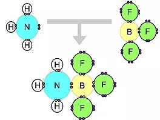
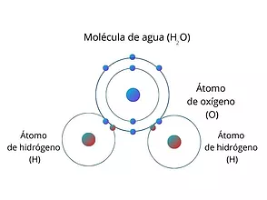
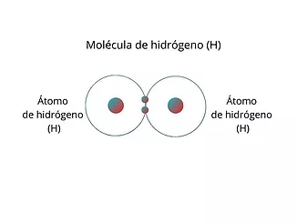

Un enlace covalente se produce en dos átomos cuando estos se unen para poder alcanzar el octeto estable y comparten electrones del ultimo nivel.
En la mayoría de los enlaces covalentes, los átomos tienen diferentes electronegatividades y como resultado un átomo tiene mayor fuerza de atracción por el par de electrones compartido que el otro átomo. En general cuando se unen dos átomos no metálicos diferentes, los electrones se comparten en forma desigual. Un enlace covalente en el que los electrones se comparten desigualmente se les llaman enlace covalente polar.
Si los átomos enlazados son no metales e idénticos, los electrones son compartidos por igual por los dos átomos, a estos se les llaman covalente apolar. En este enlace covalente no polar la densidad electrónica es simétrica con respecto a un plano perpendicular.
